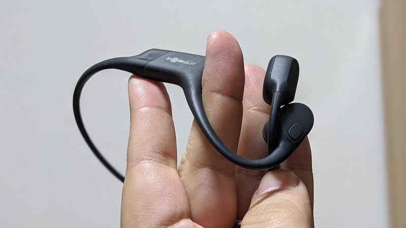
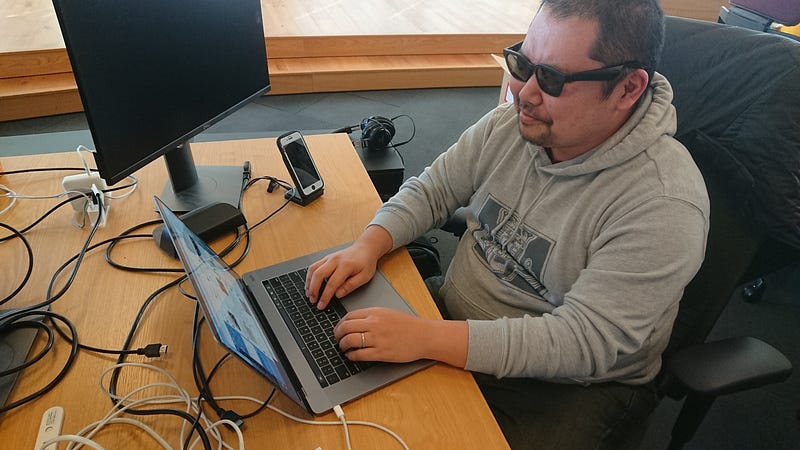
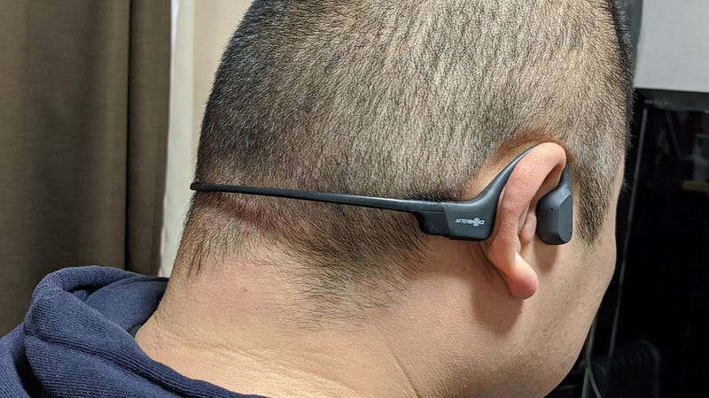
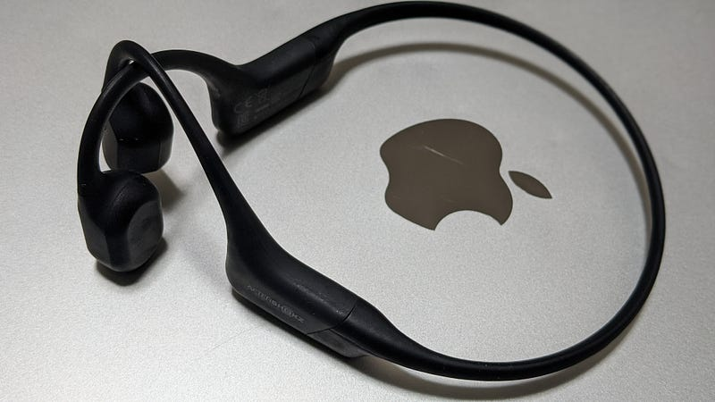

在宅作業にもおすすめ骨伝導イヤホン AfterShokz Aeropex
在宅作業にもおすすめ骨伝導イヤホン AfterShokz Aeropex
2020年がはじまってまだ３ヶ月程度しか経っていませんが、個人的な「今年買って良かった商品」ベストワン、ベストオブベストが決定したのでお知らせいたします。それがこちら AfterShokz Aeropex 骨伝導イヤホン。

Amazon.co.jp： AfterShokz Aeropex 骨伝導ワイヤレスヘッドホン 防水bluetooth5.0 コズミックブラック: 家電・カメラamzn.to
最初に結論だけ書くと、
- 「骨伝導イヤホンなんてまともに聞こえないんでしょ？」という思い込みを覆される音質の高さ
- しかも音漏れがほとんどしない！
- 軽い！
- 電池長持ち！（8時間）
- 耳を覆い隠したり、耳の中になにか部品を入れる必要性がなくなって楽！
- イヤホンからの音と、環境音や他人の話し声両方とも聞けて「ながら聞き」に便利
- 圧倒的高音質を楽しみたい、と言うときに使うものではない
という感じです。総評としては100点満点で99点。圧倒的音質じゃない点だけ（自分的にはそれはマイナスですらないですが）。最高におすすめ。
これまで自分は仕事をするときでも必ず何かの動画を横でかけて、画面はほとんど見ずに音だけ聞きながら作業する、というスタイルでした。なので一日中ほぼずっとなんらかしらのイヤホンが必要だったわけです。
ところが、いわゆる耳の中に器具を入れる系のイヤホンだとほんの一時間もすると耳が痛くなってくるという問題になやまされていたため、ある時を境にヘッドホン派になりました。
長年愛用してたのはaudio technicaのこのシリーズ。ノイズキャンセリング機能もあり、耳に当たるマフのクォリティも大好きでした。長時間使い続けるのでマフも何回も交換して愛用しておりました。
Amazon.co.jp： audio-technica 密閉型ポータブルヘッドホン ハイレゾ音源対応 ブラック ATH-MSR7 BK: 家電・カメラamzn.to
でもまだ少し気になるのがやはりそのサイズ。持ち運ぶ時はそれなりにかさばるし、常に頭が重い(笑)。こまかいことをいうと、仕事中はある程度他人の声も聞こえた方がいいので片耳だけヘッドホンをはずしている、なんて状態でした。
あと、行儀悪い話ですか、実は夜寝るときもなにか音を聞きながらでないと寝られないタチで… 夜もヘッドホンをしながら寝るのですが、すぐに気づかれるとおり、ヘッドホンだとその厚さで頭の向きに制限が…
そんなわけで別に大きい不満があるわけでもないけど、なにかイマイチな感じがしながらヘッドホンを数年使っていました。
ところが2020年のはじめ、諸事情によりBOSEの骨伝導「サングラス」という商品を手に入れたとことにより状況が変わります。

この商品自体はランニングをしたり運転をしたりするシーンでサングラスをかけることが多くその際音楽を聞きたい、という目的がある人向けの商品です。
それまで骨伝導イヤホンについては聞いたことはあったものの、使ってみもせずに「どうせよく聞こえないんでしょ」と思っていたけどこの商品を買って完全に意見がかわりました。
「こんな（失礼）商品でもしっかり聞こえる…！」
この商品、本当に見かけによらず高音質なのです。しかも自分の欲しい条件に完全にマッチしています。軽いし、イヤホンから以外の音も聞こえるし、耳が痛くならないし… おまけに音漏れも全然気にならない。ただ、唯一の難点はそう、サングラスの形をしていることですね。僕にはサングラスはいらなかったのです…
ともあれサングラスの形をしていて、うまく耳の横にフィットさせられない商品でこの音なのだから、普通の骨伝導イヤホンだったらかなりいけるのでは？と探して見つけたのが今回のAeropexなわけです。
Amazon.co.jp： AfterShokz Aeropex 骨伝導ワイヤレスヘッドホン 防水bluetooth5.0: 家電・カメラamzn.to
重さはたったの26g、Bluetoothで接続し、電源は8時間も持つ！耳は痛くならず、イヤホンの音を聞きながら外の音も聞こえ、寝るときにつけてても邪魔にならないｗ！最高！

あまりにも軽くてつけているのを忘れます。実際、一回だけ「頭の上にめがねをかけたまま『お〜い、めがねはどこだ？』とさがすおじいさん」を地で行くことをしてしまいました。
音漏れも実用レベルではほとんどしません。バスとかに乗ってるとさすがに細部までちゃんと聞こえるようにすると音漏れがし始めるので、そういう用途ではないですね。音質も低音がズンズン聞こえるとか、そういうのはもちろん求められるレベルのものではありません。
しかし、普通の生活音の範囲内で、何を言っているか（どんな音楽なのか）はっきり聞き取れて不満がない、という程度にはしっかり聞こえて、音漏れもしません。最高！
オフィス内で CoDやApexのような銃撃戦をずっとやってる動画を体感的にけっこう大きな音で見ていても、銃弾の音で隣の席の人に迷惑をかけるような事はありません。

そしてタイトルにも書きましたが、COVID-19で皆さんがリモートワークを始めた結果、ビデオ会議にも威力抜群です。家にいる小学生が何かをやらかしたとしてもそれをしっかり聞きつつ、会議の音もちゃんと聞こえます。
というわけでとにかくこの感動を皆様にも感じて欲しいので超よいしょ記事を書きました。AfterShokz社からは特に何もいただいておりません。あくまで私の感想です。是非Aeropex、おためしを！最高！